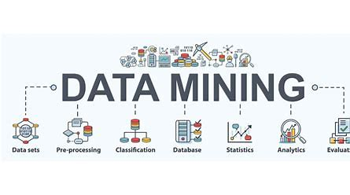

Journal
Hello, I'm
Gunasekaran V
PhD Research Scholar
Researching Adaptive Lane Management, Autonomous Vehicles, and Intelligent Transportation Systems at VIT Vellore. Passionate about leveraging Deep Learning and Computer Vision to build safer autonomous driving solutions.
VIT Vellore
Computer Vision
Autonomous Systems
Introduction
About Me
I am a PhD Research Scholar at the School of Computer Science and Engineering, VIT Vellore, working on cutting-edge research in Computer Vision and Autonomous Vehicle Systems. My research focuses on developing robust lane detection algorithms and adaptive lane management systems for autonomous driving applications.
With a strong foundation in Machine Learning, Deep Learning, and full-stack development, I am committed to building innovative solutions that enhance road safety and advance intelligent transportation systems.
0
Publications
0
Projects
0
Years Research
Academic Background
Education
2024 - Present
Doctor of Philosophy (PhD)
School of Computer Science and Engineering, VIT Vellore
Research Focus: Adaptive Lane Management Systems, Computer Vision, Deep Learning for Autonomous Vehicles
2022 - 2024
Master of Computer Applications (MCA)
VIT Vellore
CGPA: 8.83/10
2019 - 2022
Bachelor of Computer Applications (BCA)
VIT Vellore
CGPA: 8.65/10
Focus Areas
Research Interests
Autonomous Vehicles
Developing perception systems and decision-making algorithms for self-driving vehicles, with a focus on lane detection and adaptive driving systems.
Computer Vision
Image processing, object detection, semantic segmentation, and scene understanding for real-time applications in challenging environments.
Deep Learning
Neural network architectures including CNNs, transformers, and attention mechanisms for visual recognition and understanding tasks.
Lane Detection
Robust lane marking detection algorithms using hyperparameter optimization and warm-started bandit approaches for varying road conditions.
Machine Learning
Classical and advanced ML techniques including ensemble methods, optimization algorithms, and automated machine learning pipelines.
Intelligent Transportation
Smart transportation systems, traffic management, and vehicle-to-infrastructure communication for safer and more efficient mobility.
Technical Expertise
Skills
Programming Languages
Python
95%
Machine Learning
90%
Web Development
85%
DBMS SQL Programming Web Development
80%
GIT and Github
80%
Frameworks & Tools
Research Skills
Academic Output
Publications
Conference
ATSGA-Net: Adaptive Temporal Spatio-Graph Attention Network for Robust Lane Detection
Scopus Indexed Springer Book Series
Lane detection plays a vital role in ADAS and autonomous vehicle perception. Yet, existing deep learning models face limitations of temporal inconsistency and unstable lane geometry under complex conditions such as occlusion, shadows, and heavy traffic.
Conference
Stacking CNN-Based Deep Networks for Lane Detection on CULane: A performance-driven approach
IEEE International Conference, 2025
Robust Lane detection is critical for autonomous driving and high-end driver-assistance systems (ADAS) but remains challenging in adverse conditions. This research proposes a lane segmentation technique based on deep learning models from the CULane dataset with the aid of U-Net, ResNet, VGG, Xception and DenseNet architectures.
Academic Profiles
Portfolio
Projects
Machine Learning
Adaptive Lane Detection System
Real-time lane detection using deep learning with warm-started hyperparameter optimization for autonomous driving applications.
Python
PyTorch
OpenCV

Machine Learning
Fake News Detection Web App
ML-powered web application to identify and flag potentially misleading news articles using NLP and classification algorithms.
Python
Scikit-learn
Flask
Computer Vision
Road Lane & Drowsiness Detection
Integrated system for real-time lane detection and driver drowsiness monitoring to enhance road safety.
Python
OpenCV
TensorFlow
Web Development
Online Book Store
Full-featured e-commerce book store with admin and user panels, shopping cart, and inventory management.
HTML
CSS
JavaScript
PHP

Mobile App
COVID-19 Health Tracker
Mobile application for tracking health parameters and receiving alerts during the COVID-19 pandemic.
Android Studio
Java
Firebase

OOP Project
Patient Record Management
Object-oriented system for managing patient records, doctor information, and medical histories with CRUD operations.
Java
OOP
MySQL
Get In Touch
Contact Me
Let's Collaborate
I'm always interested in research collaborations, academic discussions, and opportunities in computer vision and autonomous systems. Feel free to reach out!
gunasekaran972001@gmail.com
Location
VIT Vellore, Tamil Nadu, India